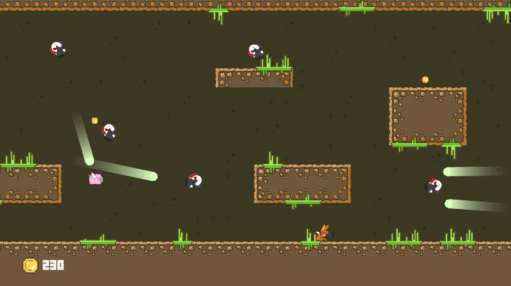
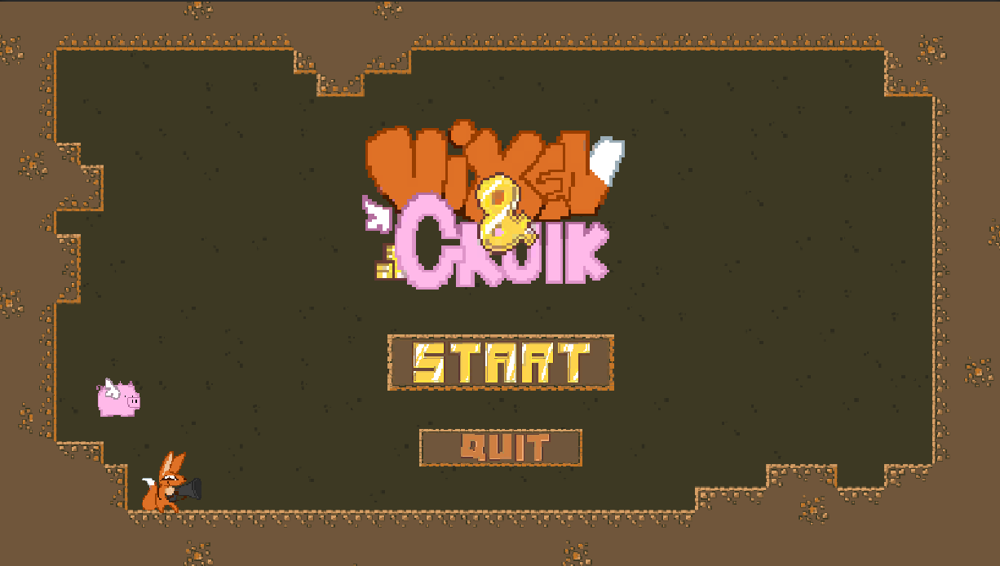

UI / UX
L'élément le plus important à transmettre au joueur est le nombre de pièces qu'il a réussi à collecter. Pour garantir une bonne lisibilité, ce score est affiché en bas à gauche de l'écran, un emplacement qui permet de le voir facilement sans gêner la visibilité du niveau. Les menus, quant à eux, ont été pensés pour être simples et compréhensibles.
Leur objectif est de permettre au joueur d'accéder rapidement au jeu ou de retourner facilement au menu principal, sans surcharge visuelle.


Level Design
Le niveau dure environ 2 minutes et a été conçu pour que l'intensité augmente progressivement tout comme le nombre d'ennemis, tandis que les zones de protection disparaissent petit à petit. Le jeu est un side-scroller forcé, à la manière de Geometry Dash. Au début, les ennemis les plus simples apparaissent en faible quantité pour permettre au joueur de prendre en main les contrôles. La première partie du niveau est même vide d'ennemis pour faciliter l'adaptation.
Durant la première moitié, Gruik peut se protéger grâce à des éléments de décor, qui disparaissent progressivement pour rendre la fin du niveau plus intense. Les ennemis apparaissent zone par zone afin d'avoir un rythme fluide.

